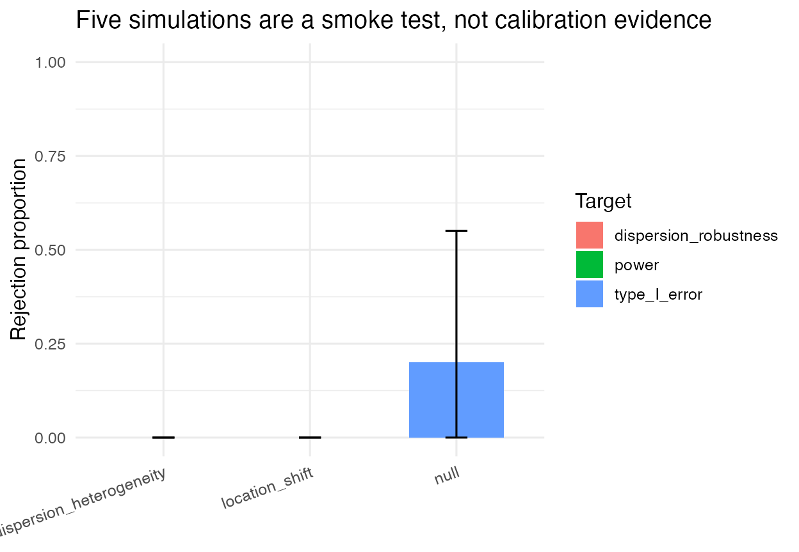

validation.RmdA distance-based mixed model should be reproducible at three levels:
the data and ecological distance, the experimental design and
permutation rule, and the software result. distmer exposes
each of these rather than treating a pseudo-F and p-value as a black
box.
This guide shows reference comparisons, deterministic package checks, simulation tools, and a reporting record that can accompany a paper or data release.
For an independent one-factor design, the fixed-effect statistic has
the same dissimilarity-space definition as
vegan::adonis2(). The following comparison uses the
dune communities and Bray–Curtis dissimilarity.
data(dune, dune.env, package = "vegan")
dune_bray <- vegdist(dune, method = "bray")
distmer_fit <- permanova(
dune_bray ~ Management, dune.env,
permutations = 199, mc_permutations = 0, seed = 101
)
vegan_fit <- adonis2(
dune_bray ~ Management, dune.env,
permutations = 199
)
data.frame(
implementation = c("distmer", "vegan::adonis2"),
pseudo_f = c(distmer_fit$table$`Pseudo-F`[1], vegan_fit$F[1])
)
#> implementation pseudo_f
#> 1 distmer 2.767243
#> 2 vegan::adonis2 2.767243The statistic should agree to numerical tolerance. Permutation p-values need not be identical unless the two functions receive the identical permutation matrix; recording only a seed does not guarantee that different packages draw the same sequence of arrangements.
The dispersion companion can also be checked against
vegan::betadisper().
selected <- dune.env$Management %in% c("NM", "SF")
two_group_distance <- vegdist(dune[selected, ], method = "bray")
two_group_env <- droplevels(dune.env[selected, , drop = FALSE])
dispersion_design <- compile_permanova_design(
~ Management, two_group_env, two_group_distance
)
distmer_dispersion <- permanova_dispersion(
dispersion_design, term = "Management", type = "median",
permutations = 199, seed = 101
)
vegan_dispersion <- betadisper(
two_group_distance, two_group_env$Management, type = "median"
)
c(
maximum_distance_difference = max(abs(
distmer_dispersion$distances - vegan_dispersion$distances
)),
pseudo_f_difference = distmer_dispersion$test$statistic -
unname(anova(vegan_dispersion)["Groups", "F value"])
)
#> maximum_distance_difference pseudo_f_difference
#> 1.791434e-11 2.392508e-11These are useful anchors, but validation is broader than agreement with one package. Mixed designs are also checked against their univariate Euclidean counterparts, exact enumeration, independent matrix calculations, and operating-characteristic simulations.
run_permanova_validation() performs the package’s fast
analytic battery. It checks reference statistics, exact permutation
counts, projector algebra, retained non-Euclidean geometry, mixed-design
denominators, and failure boundaries.
validation_report <- run_permanova_validation()
#> Set of permutations < 'minperm'. Generating entire set.
validation_report[, c("check", "passed", "metric")]
#> check passed
#> one-way Euclidean F equals ANOVA TRUE
#> mixed Euclidean F equals whole-plot ANOVA TRUE
#> exhaustive whole-plot enumeration TRUE
#> negative eigenvalues retained TRUE
#> unsupported imbalance rejected TRUE
#> rank-safe projection stability TRUE
#> declared fixed-by-random denominator equals classical interaction test TRUE
#> exhaustive crossed within-block cell enumeration TRUE
#> crossed permutation statistics equal direct blocked ANOVA TRUE
#> explicit colon interaction retains non-nested provenance TRUE
#> omitted fixed-by-random interaction rejected by default TRUE
#> non-Euclidean Satterthwaite p-value suppressed TRUE
#> non-Euclidean crossed permutation p-value retained TRUE
#> nested Euclidean F equals top-unit ANOVA TRUE
#> exhaustive nested top-unit enumeration TRUE
#> nested site-level F equals within-region ANOVA TRUE
#> nested observation-level F equals within-site ANOVA TRUE
#> exhaustive nested within-parent enumeration TRUE
#> exhaustive nested within-unit enumeration TRUE
#> dispersion F equals ANOVA on distances to centroids TRUE
#> crossed dispersion permutations equal direct blocked residual ANOVA TRUE
#> dispersion geometry retains the complete distance spectrum TRUE
#> hybrid treatment F equals treatment-region profile ANOVA TRUE
#> hybrid profile permutations equal direct ANOVA TRUE
#> hybrid variance components reconstruct selected strata TRUE
#> unbalanced Type I statistics equal sequential ANOVA TRUE
#> unbalanced additive Type II statistics are order invariant TRUE
#> unbalanced Type III statistics equal full-versus-drop references TRUE
#> unbalanced exact residual permutations equal direct ANOVA TRUE
#> aliased incomplete Type III hypothesis rejects explicitly TRUE
#> unequal random-intercept F equals cluster-centroid ANOVA TRUE
#> unequal random-intercept permutations equal direct centroid ANOVA TRUE
#> unique assignment audit equals exhaustive distance engine TRUE
#> intercept-only Freedman-Lane equals raw centroid permutation TRUE
#> calibration batches use disjoint deterministic seed ranges TRUE
#> unbalanced nested F equals top-centroid ANOVA TRUE
#> unbalanced nested permutations equal direct top-centroid ANOVA TRUE
#> unbalanced block F equals cell-centroid blocked ANOVA TRUE
#> unbalanced block permutations equal direct cell-centroid ANOVA TRUE
#> planned contrast F equals scalar contrast formula TRUE
#> planned contrast permutations equal constrained scalar fit TRUE
#> contrast family adjustment equals stats::p.adjust TRUE
#> multifactor marginal contrast F equals scalar GLH TRUE
#> multifactor marginal permutations equal response reconstruction TRUE
#> mixed contrast F equals cell-centroid scalar GLH TRUE
#> global-null max-F joint distribution equals direct enumeration TRUE
#> stratified span guard rejects numerical centering dust TRUE
#> unbalanced mixed contrast F equals cluster-centroid GLH TRUE
#> unbalanced mixed contrast permutations equal reconstruction TRUE
#> covariate-adjusted contrast F equals scalar GLH TRUE
#> covariate-adjusted permutations equal response reconstruction TRUE
#> covariate-adjusted near-alias rejects informatively TRUE
#> mixed global-null max-F observed statistics equal scalar unit GLH TRUE
#> mixed global-null max-F joint distribution equals scalar reconstruction TRUE
#> unbalanced nested child-level F equals scalar GLH TRUE
#> unbalanced nested child-level permutations equal reconstruction TRUE
#> unbalanced nested observation-level F equals scalar GLH TRUE
#> unbalanced nested observation-level permutations equal reconstruction TRUE
#> unbalanced hybrid F equals equal-site profile GLH TRUE
#> unbalanced hybrid permutations equal profile reconstruction TRUE
#> random-slope F equals scalar paired-difference test TRUE
#> random-slope sign flips equal direct reconstruction TRUE
#> random-slope trace covariance equals scalar method of moments TRUE
#> strong closed pairwise intersection statistics equal reconstruction TRUE
#> strong closed pairwise p-values equal reconstruction TRUE
#> partial-null pairwise permutations keep non-null groups fixed TRUE
#> capability registry resolves every primary engine TRUE
#> capability registry states denominator permutation and exclusions TRUE
#> one-way F equals vegan::adonis2 TRUE
#> dispersion distances equal vegan::betadisper TRUE
#> metric
#> 1.250555e-12
#> 1.776357e-15
#> 2.400000e+01
#> 1.000000e+00
#> 1.000000e+00
#> 5.551115e-17
#> 2.775558e-16
#> 1.600000e+01
#> 1.136868e-13
#> 1.000000e+00
#> 1.000000e+00
#> 1.000000e+00
#> 1.000000e+00
#> 3.552714e-15
#> 7.200000e+02
#> 5.931266e-15
#> 2.131628e-14
#> 6.400000e+01
#> 6.400000e+01
#> 8.881784e-16
#> 2.486900e-14
#> 2.042810e-14
#> 4.857226e-17
#> 9.734435e-13
#> 1.776357e-15
#> 2.643219e-12
#> 3.240075e-12
#> 1.307399e-12
#> 1.598721e-14
#> 1.000000e+00
#> 3.481659e-13
#> 3.481659e-13
#> 0.000000e+00
#> 0.000000e+00
#> 1.000000e+06
#> 7.105427e-15
#> 7.105427e-15
#> 2.192690e-15
#> 4.831691e-13
#> 4.440892e-15
#> 5.995204e-15
#> 0.000000e+00
#> 6.217249e-15
#> 9.769963e-15
#> 2.842171e-14
#> 0.000000e+00
#> 1.922963e-16
#> 4.440892e-15
#> 8.881784e-16
#> 7.016610e-14
#> 3.330669e-15
#> 1.000000e+00
#> 5.329071e-15
#> 1.065814e-14
#> 5.329071e-15
#> 4.440892e-15
#> 4.085621e-14
#> 9.325873e-15
#> 3.552714e-15
#> 1.065814e-14
#> 4.973799e-14
#> 3.552714e-15
#> 1.776357e-15
#> 0.000000e+00
#> 0.000000e+00
#> 0.000000e+00
#> 2.100000e+01
#> 0.000000e+00
#> 1.733724e-12
#> 1.110223e-15
#> Overall: PASS
stopifnot(all(validation_report$passed))Keep this report with the package version. A green report shows that the installed code reproduces its pinned numeric checks on the current platform; it does not certify that a new field design satisfies the package assumptions.
Simulation asks a different question: how does a planned design behave under known null, location-shift, and assumption-stress scenarios? The small run below is intentionally only a code example so that the vignette builds quickly.
simulation <- simulate_mixed_validation(
simulations = 5, permutations = 19,
groups_per_treatment = 4, replicates = 3, seed = 101
)
simulation$summary[, c(
"scenario", "estimand", "rejection_rate", "monte_carlo_se",
"max_abs_denominator_f_difference"
)]
#> scenario estimand rejection_rate monte_carlo_se
#> 1 null type_I_error 0.2 0.1788854
#> 2 location_shift power 0.0 0.0000000
#> 3 dispersion_heterogeneity dispersion_robustness 0.0 0.0000000
#> max_abs_denominator_f_difference
#> 1 3.552714e-15
#> 2 2.131628e-14
#> 3 2.220446e-15
simulation_plot <- simulation$summary
ggplot(simulation_plot, aes(scenario, rejection_rate, fill = estimand)) +
geom_col(width = 0.65) +
geom_errorbar(
aes(
ymin = pmax(0, rejection_rate - 1.96 * monte_carlo_se),
ymax = pmin(1, rejection_rate + 1.96 * monte_carlo_se)
),
width = 0.15
) +
scale_y_continuous(limits = c(0, 1)) +
labs(title = "Five simulations are a smoke test, not calibration evidence",
x = NULL, y = "Rejection proportion", fill = "Target") +
theme(axis.text.x = element_text(angle = 20, hjust = 1))
For scientific validation, increase the simulation count to hundreds or thousands, use realistic abundance distributions and missingness, and report binomial uncertainty. Include at least an exchangeable null, a plausible effect, dispersion heterogeneity, heavy tails or outliers where relevant, and the exact imbalance expected in the survey.
Specialised helpers cover nested, crossed, unbalanced, contrast, random-slope, and strong-FWER designs. Their names are available with:
grep("^(simulate|audit)_.*validation$", getNamespaceExports("distmer"),
value = TRUE)
#> [1] "simulate_adjusted_contrast_validation"
#> [2] "simulate_nested_level_validation"
#> [3] "simulate_mixed_contrast_validation"
#> [4] "simulate_mixed_maxT_validation"
#> [5] "simulate_unbalanced_mixed_contrast_validation"
#> [6] "simulate_contrast_validation"
#> [7] "simulate_unbalanced_mixed_validation"
#> [8] "simulate_unbalanced_nested_lower_validation"
#> [9] "simulate_dispersion_validation"
#> [10] "simulate_crossed_interaction_validation"
#> [11] "simulate_mixed_validation"
#> [12] "simulate_maxT_validation"
#> [13] "simulate_unbalanced_hybrid_validation"
#> [14] "simulate_nested_validation"
#> [15] "simulate_strong_pairwise_validation"
#> [16] "simulate_random_slope_validation"
#> [17] "simulate_hybrid_validation"
#> [18] "simulate_unequal_random_intercept_validation"
#> [19] "simulate_marginal_contrast_validation"
#> [20] "simulate_unbalanced_validation"
#> [21] "simulate_crossed_permutation_validation"A result contains more than its printed table. Preserve the elements that identify the statistical question and exchangeability rule.
names(distmer_fit)
#> [1] "call" "design" "engine" "type"
#> [5] "fit" "seed" "mc_permutations" "table"
distmer_fit$engine
#> [1] "fixed effects"
distmer_fit$design$spectral[c(
"euclidean", "negative_count", "negative_ratio", "correction"
)]
#> $euclidean
#> [1] FALSE
#>
#> $negative_count
#> [1] 5
#>
#> $negative_ratio
#> [1] 0.06419861
#>
#> $correction
#> [1] "none"
distmer_fit$fit$tests$Management[c(
"estimand", "exchangeable_units", "permutation_algorithm"
)]
#> $<NA>
#> NULL
#>
#> $exchangeable_units
#> [1] "observations"
#>
#> $permutation_algorithm
#> [1] "term-specific Freedman-Lane permutation for Type I hypothesis"For mixed results, also retain the reported denominator, hierarchy
assignment, unit-centroid weighting, attainable permutation count, and
any symmetry or additivity assumption.
permanova_capabilities() records the validated scope and
exclusions for every specialised implementation.
library(distmer)
library(vegan)
# 1. Freeze the input and ecological choices.
community <- read.csv("community.csv", row.names = 1, check.names = FALSE)
metadata <- read.csv("metadata.csv")
distance <- vegdist(community, method = "bray")
# 2. Fit with an explicit seed and enough permutations for the intended report.
fit <- permanova(
distance ~ treatment + covariate + (1 | site),
metadata, permutations = 9999, seed = 20260723
)
# 3. Save the complete result, not only a copied p-value.
saveRDS(
list(
fit = fit,
distance_diagnostics = distance_diagnostics(distance),
package_version = as.character(packageVersion("distmer")),
session = sessionInfo()
),
"distance-model-result.rds"
)If the attainable permutation space is small, use
permutations = "all" and record that the result is exact.
If Monte Carlo sampling is used, the minimum possible p-value and its
sampling variation should be compatible with the claims being made.
distmer, vegan, and R versions and the
saved fitted object;The package tests the algebra it claims to implement. The ecologist remains responsible for showing that the distance, model, experimental unit, and exchangeability assumptions represent the study that was actually conducted.